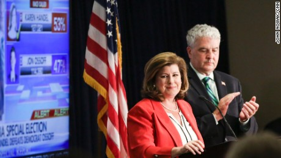

Georgia’s Special Election Sees Expected Results Despite National Attention and Influence Avery Wall
Avery Wall
On June 20th, over 250,000 Georgians voted in the runoff election for the 6th District after former representative Tom Price was chosen as the Secretary of Health and Human Services for the Trump Administration. They elected Republican candidate Karen Handel, which is not surprising considering the district’s history of Republican leadership, but the path leading up to this victory was not as smooth as many republicans wanted. After the primary in April when Democratic candidate Jon Ossoff received 48.1% of the vote, only 1.9% short of the majority that would have gained him the seat then and there, everyone knew this would be a tight race.
That uncertainty in the Republican party and the glimmer of hope in the Democratic party may have been what caused this to be the most expensive House race in U.S. History. At least $50 million was spent funding this race, and Jon Ossoff is estimated to have received almost $8 million more in funding. Despite the Democrat’s spending, Ossoff lost by about 3.8%, and both candidates gave speeches that night.

Courtesy of: CNN
In her victory speech, Handel began by thanking GOP leaders and some of her Republican opponents from the primary who went on to support her campaign. She thanked President Trump, which surprised many people due to the distance she seemed to keep from his support during the election; that distance was likely due to the narrow margin by which Trump won Georgia’s 6th District, as well as President Trump’s low overall approval ratings. Her final thank you to a politician went to House Majority Whip Steve Scalise, and she took a moment to reflect on the Congressional baseball field shooting and encourage more civil political discourse. She wished her opponent, Jon Ossoff, well, and ensured his supporters that she would listen to them, before going over some of her main campaign promises, including improving health care and creating more jobs. Towards the end of her speech, Handel remarked upon the importance of her win due to her being the first female Republican Representative for Georgia.
Courtesy of: CNN
Jon Ossoff maintained a positive tone in his concession speech, despite the boos at the mention of Karen Handel’s name, and celebrated the accomplishments of his supporters in such a typically conservative area. Ossoff also commented on how much the nation focused on Georgia’s 6th District during the weeks leading up to the election, and congratulated the community for rejecting the division and negativity of national politics.
Courtesy Of: Suntimes
Although the special election in Georgia received a great deal of coverage and is the most expensive House race in history, at this time a total of 7 special elections have been scheduled for 2017. The elections in Georgia, Kansas, Montana, South Carolina, and California have already occurred, with Republicans winning in each except for California, and elections in Alabama and Utah are scheduled for later in the year. Many Democrats have been disappointed by their failure to gain more seats, including in Montana where the incumbent Greg Gianforte won despite allegedly assaulting a reporter, but Republicans have not gained any more seats. If the political climate remains as contentious as it has been during the 2016 presidential election and subsequent special elections, the 2018 midterms will be a difficult time for both politicians and voters.